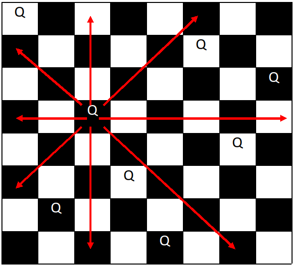
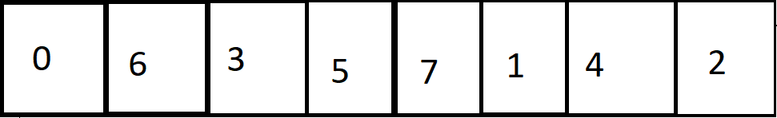

Suppose we have a standard chess board, and 8 queens. Find all possible placements of queens such that they do not
attack each other.
Note:
The dimentions of a standard chessboard are 8 by 8.
One queen can attack another if they are directly vertical, horizontal, or diagonal from one another.

One of many valid placements for 8 queens. Red arrows represents how a queen can attack.
Image taken from CodeStepByStep.com
Data Structure:
Intuitively, representing a chessboard would done using a 2-d matrix.
However, lets trade intuition for simplicity.

The above 2-D representation transformed into a 1-D representation. The numbers represent the position (the row) of the queens,
starting at zero.
The algorithm is as follows:
Start with an array of size 8, all of the elements in the array are initialized to zero.
Starting with the current queen (the first queen if this is our first iteration),
check to see if the queen is in a valid spot. Note: Checking will only occur to the left of the queen
(assume everyting to the right of the queen has not been placed yet).
If during the process of moving to the right we go beyond the board, print the board and backtrack.
If during this process of moving the queen to next row, we go beyond the board, backtrack.
If the queen is in a valid spot, move to the next column (to the right) and repeat 2
If the queen is not in a valid spot, move the queen to the next row.
Some extra stuff:
This problem can actually become more general, for example, instead of solving the 8 queens problem, what about 7 queens on a 7x7 board?
10 queens on a 10x10 board?
How about n queens on a nxn board?